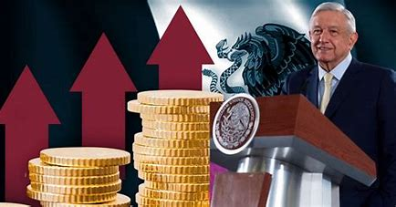
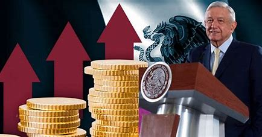

Bienvenidos a la Economía de México: Una Mirada Profunda
¡Explora
la riqueza económica de México en esta página web dedicada a su
vibrante panorama económico! Sumérgete en la economía de este país
lleno de historia y diversidad, donde convergen tradición y modernidad
para crear un entorno económico único.
Descubre la Diversidad Económica:
Desde los vibrantes mercados locales hasta los complejos centros
financieros internacionales, la economía mexicana es un crisol de
actividades comerciales. Explora cómo los diversos sectores, desde la
agricultura hasta la tecnología, contribuyen al crecimiento y
desarrollo del país.
Conéctate con el Mundo:
México no solo es un actor importante en América Latina, sino que
también tiene una presencia significativa en la economía global.
Aprende sobre sus relaciones comerciales internacionales, incluyendo el
impacto del T-MEC y otras asociaciones clave, y cómo estas influencian
su posición en el escenario mundial.
Desafíos y Oportunidades:
Enfrentando desafíos como la desigualdad socioeconómica y la
corrupción, México también está lleno de oportunidades para el
crecimiento y la innovación. Explora cómo las políticas
gubernamentales, las iniciativas empresariales y la sociedad civil
están trabajando juntas para superar obstáculos y crear un futuro
próspero para todos los mexicanos.
Únete a la Conversación:
¡No te pierdas la oportunidad de participar en la conversación sobre la
economía de México! Sigue nuestras actualizaciones, participa en
debates y comparte tus ideas sobre cómo impulsar el crecimiento
económico y el desarrollo sostenible en este país fascinante.

 
